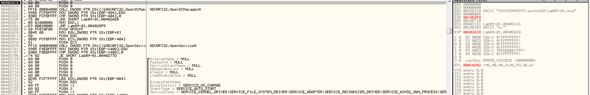
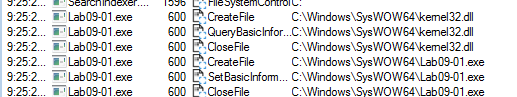
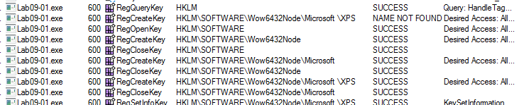
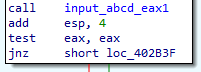
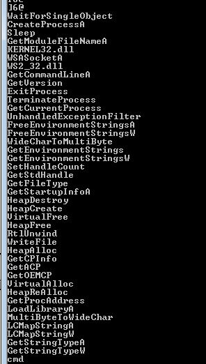
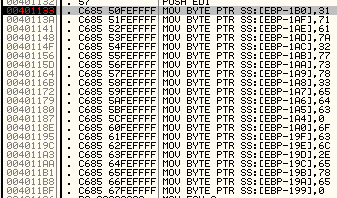

Practical Malware Analysis - Lab 9
Lab 9-1
Analyze the malware found in the file Lab09-01.exe using OllyDbg and IDA Pro to answer the following questions. This malware was initially analyzed in the Chapter 3 labs using basic static and dynamic analysis techniques.
Q1: How can you get this malware to install itself?
Going into sub_402410 where the flow has to pass many conditions for the malware not go into that function It Gets the filename then calls cmd /c del which shows that this function responsible for the deletion of the malware

Going to branch to avoid deletion we see check in function with parameter last argv[argc-1] going into that function it’s checks to see if string passed is equal to “abcd” or not

Passing that check then we see it needs arguments in like with last argument argv[argc-1] is abcd (the passkey)
- -in
“abcd”
- -re
“abcd”
- -c
“abcd”
- -cc
“abcd”

following the code to see what arguments it needs
we notice -in requires one argument and there is a function in it involves around service manager and creating a service

-re is opposite of -in it involves around deleting a service and a file
we notice if -cc is supplied it queries xps register with what -c set then some processing and prints it

we notice -c requires 6 arguments
looks like here it sets XPS register subkey with the 4 aruguments passed
we now run the malware in OllyDbg with aruguments -in qw abcd to test the functionality so it doesn’t delete itself (not that it could) As both in IDA and OllyDbg starts with same base it’s easier to identify functions the main function in IDA was at 402AF0 we search for it in OllyDbg

stepping over till we reach this instruction then stepping into it
We reach the function that checks the password since we provided the correct one stepping over

we Get at eax 1 and we skip the selfdelete routine after stepping we arrive at this code check as we provided argc=4
we arrive at the routine with install a service it, preparing procmon here
We can see the malware create path string with its name likely to create itself there
it will open servicemanager to create service with its name and specified parameters in system32 dir
Here what it does creates file kernel32 and Lab09-01.exe under syswow
and sets this register
Q2: What are the command-line options for this program? What is the password requirement?
Q3: How can you use OllyDbg to permanently patch this malware, so that it doesn’t require the special command-line password?
by converting password checking function to mov eax,1

Q4: What are the host-based indicators of this malware?
%SYSTEMROOT%WindowsSystem32 HKLMSOFTWAREMicrosoft XPS opening service manager
Q5: What are the different actions this malware can be instructed to take via the network?
Q6: Are there any useful network-based signatures for this malware?
Lab 9-2
Analyze the malware found in the file Lab09-02.exe using OllyDbg to answer the following questions.
Q1: What strings do you see statically in the binary?
Q2: What happens when you run this binary?
Nothing in the foreground
Q3: How can you get this sample to run its malicious payload?
In OllyDbg after stepping into first function it utilizes the malware name in something

It compares the name of exe to ocl.exe based on the output it terminates or not

so we rename the file to ocl.exe
Q4: What is happening at 0x00401133?
Using command line to bp 401133 then running till breakpoint
we see hex values moved to the stack (encoded?)
Q5: What arguments are being passed to subroutine 0x00401089?
our encoded hex in ascii, is gonna be decoded ?

Q6: What domain name does this malware use?
By executing till return we can see the domain

Q7: What encoding routine is being used to obfuscate the domain name?
putting breakpoint at the xor in the loop we see it xor the 46 with 31 (l in ascii)

it xors letters with different keys till the decoded string appear in the memory dump
Q8: What is the significance of the CreateProcessA call at 0x0040106E?
Creating cmd process which will likely execute commands from the domain at Q6

Lab 9-3
Analyze the malware found in the file Lab09-03.exe using OllyDbg and IDA Pro. This malware loads three included DLLs (DLL1.dll, DLL2.dll, and DLL3.dll) that are all built to request the same memory load location. Therefore, when viewing these DLLs in OllyDbg versus IDA Pro, code may appear at different memory locations. The purpose of this lab is to make you comfortable with finding the correct location of code within IDA Pro when you are looking at code in OllyDbg.
Q1: What DLLs are imported by Lab09-03.exe?
Q2: What is the base address requested by DLL1.dll, DLL2.dll, and DLL3.dll?
Q3: When you use OllyDbg to debug Lab09-03.exe, what is the assigned based address for: DLL1.dll, DLL2.dll, and DLL3.dll?
Q4: When Lab09-03.exe calls an import function from DLL1.dll, what does this import function do?
Q5: When Lab09-03.exe calls WriteFile, what is the filename it writes to?
Q6: When Lab09-03.exe creates a job using NetScheduleJobAdd, where does it get the data for the second parameter?
Q7: While running or debugging the program, you will see that it prints out three pieces of mystery data. What are the following: DLL 1 mystery data 1, DLL 2 mystery data 2, and DLL 3 mystery data 3?
Q8: How can you load DLL2.dll into IDA Pro so that it matches the load
address used by OllyDbg?